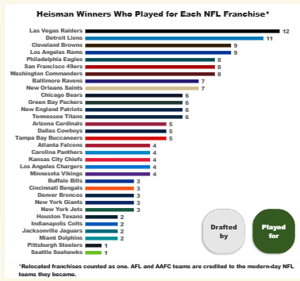
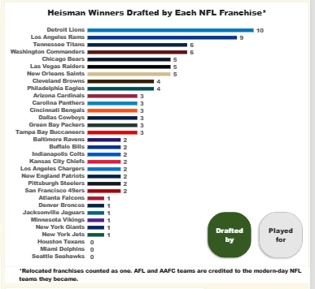

13 of 90
Never logged an NFL season
The trophy isn't a pro-career guarantee. Ten never played pro football anywhere, and three more only played outside the NFL.
Power BI · DAX · Power Query
What happens to a Heisman winner after the trophy? This report follows all 90 of them, season by season, from their first college game through their last pro one, and lets you slice the whole thing by team, position, college and league.
The live report, running in Power BI Desktop. Publishing a public Power BI embed needs a work or school account, so this video and the screenshots below stand in for it, and the full .pbix is in the repo if you want to open it yourself. Open on YouTube.
Three pages. The first two are the same data in two shapes. The third turns it into questions. Click any screenshot to enlarge it.
One row per winner, one column per calendar year. Every cell is the color of the team that player was on that season, and a gold star marks the Heisman year. Reading across a row is a whole career in one line.
Part of the timeline shown. The full matrix scrolls through the 2026 season.
Select Jameis Winston and the legend on the right dims every team he never played for. What's left is his whole path: Florida State, then the Buccaneers, Saints, Browns and Giants.
The legend is split into College, NFL and Other (AFL, AAFC, CFL, USFL and friends), and the dimming is a DAX measure, not a manual filter. More on that below.
Same data, but the columns are years since the Heisman season. Everyone's career starts at zero, so a 1940s winner and a 2020s winner line up directly and career lengths become easy to compare.
Part of the matrix shown (the 1979–2025 winners); it scrolls back to 1935. Gaps are real: military service, redshirt and transfer sit-out years, and seasons out of football are left blank on purpose.
Everything on one page and cross-highlighting. The left half follows the NFL Only / NFL + Other toggle. The right half is always all 90 winners, and its franchise chart has a separate Played for / Drafted by toggle (more on that below). Pick a state:
Only seasons in the NFL itself count here. The AFL, AAFC and CFL are out. Amber means you're in this mode.
On the right, the franchise chart has its own Played for / Drafted by button toggle that works independently of the amber/blue one.
One click adds AFL, AAFC, CFL, USFL, WFL and NFL Europe seasons. Every chart, card and title on the left switches over and turns blue so you can't forget which mode you're in.
Note the right half doesn't move. It's always all 90 winners, by design.
Click Alabama in the colleges chart and everything else cross-highlights. The faded bars are the full population; the solid ones are Alabama's slice of it.
The same trick works from the pie. Click QB and the whole page reframes around quarterbacks.
The franchise chart has its own toggle, separate from the amber and blue one. It asks the same question two ways. Played for counts winners who had at least one season with a franchise. Drafted by counts winners the franchise selected in the NFL, AFL or AAFC draft, whether or not they ever played there. The bars, the title and the footnote all switch together, and the chart always shows all 32 teams in their team colors.


A few things the report surfaced that I didn't expect to find.
The trophy isn't a pro-career guarantee. Ten never played pro football anywhere, and three more only played outside the NFL.
Running backs won 40 of the first 64 awards (1935–1999). Quarterbacks have won 21 of the last 26 (2000–2025).
Winners from the 1980s averaged 11.1 NFL seasons, the peak of any decade. The 2020s average of 3.2 is low because most of those careers are still going.
Vinny Testaverde played 21 NFL seasons. Counting every league, Doug Flutie matches him at 21 pro seasons.
Flip the franchise chart from Played for to Drafted by and the Raiders fall from 12 winners to 5. The Lions barely move: the most picks (10), with 11 who suited up.
35 of 39 QBs got an NFL season, against 35 of 43 running backs. Same count, different base.
The interesting part isn't the charts, it's the model and measures underneath them.
The obvious tool for "career timelines" is a Gantt visual, and I started there. The third-party options had account walls, hidden settings and a look I couldn't configure. So I restructured the data to one row per player per season and built it with a native matrix and conditional formatting: each cell's background color comes from the team's hex code through conditional formatting. That also made the legend and the cross-highlighting possible.
One chart, two meanings. A small disconnected table (Franchise Basis) feeds a button slicer, and a single measure switches between counting players who played for a franchise and players it drafted, applying the page's current selection through TREATAS so it still cross-highlights.
Franchise Basis = DATATABLE("Basis", STRING, {{"Played for"}, {"Drafted by"}})
Franchise Winners =
VAR F = SELECTEDVALUE('nfl_franchises'[Franchise])
VAR Basis = SELECTEDVALUE('Franchise Basis'[Basis], "Played for")
VAR Played =
CALCULATE(
DISTINCTCOUNT('heisman_winners_by_year'[Name]),
'heisman_winners_by_year'[Level] = "Pro",
'heisman_winners_by_year'[Franchise] = F,
TREATAS(VALUES(Players[Name]), 'heisman_winners_by_year'[Name]))
VAR Drafted =
CALCULATE(
DISTINCTCOUNT('heisman_drafts'[Name]),
'heisman_drafts'[Franchise] = F,
TREATAS(VALUES(Players[Name]), 'heisman_drafts'[Name]))
RETURN COALESCE(IF(Basis = "Drafted by", Drafted, Played), 0)The legend colors are a measure too. With nothing selected, every team shows its real color. Once the report is narrowed to a player or group, teams nobody in the selection played for fade out.
LegendColor =
VAR PlayersNow = DISTINCTCOUNT('heisman_winners_by_year'[Name])
VAR PlayersAll = CALCULATE(DISTINCTCOUNT('heisman_winners_by_year'[Name]),
ALL('heisman_winners_by_year'))
VAR Narrowed = PlayersNow < PlayersAll
VAR Used =
CALCULATE(COUNTROWS('heisman_winners_by_year'),
TREATAS(VALUES('team_colors'[Team]), 'heisman_winners_by_year'[Team])) > 0
RETURN IF(NOT Narrowed || Used,
SELECTEDVALUE('team_colors'[Hex]),
SELECTEDVALUE('team_colors'[Faded_Hex]))I wanted the position pie ordered so the tiny slices wouldn't collide and hide their labels. Power BI's normal answer (sort by a column) threw a circular dependency error, because the order column lived in the same calculated table. The workaround: a measure dropped into the visual's Tooltips well, which makes it available as a Sort axis option.
Slice Order =
SWITCH(SELECTEDVALUE(Players[Position]),
"DB", 1, "RB", 2, "Multi", 3, "QB", 4, "WR", 5, 99)Mode Is NFL measure, so the page can't show amber numbers under a blue title.Players summary table so the whole Insights page shares one.Every season of every career is a judgment call, so the rules are written down.
| File | What it holds |
|---|---|
heisman_winners_by_year.csv | One row per player per season: team, level (College or Pro), year. 937 rows. |
team_colors.csv | 110 teams with a primary color, a category and legend colors. |
franchises.csv | Maps each historical team name to its modern franchise. |
nfl_franchises.csv | The 32 current franchises with colors. Drives the franchise chart. |
heisman_positions.csv | Each winner's position in the Heisman season. |
heisman_drafts.csv | Every pro draft selection: 99 picks covering 87 of the 90 winners. |
The career data was compiled with AI assistance (Claude), then checked player by player against each winner's English Wikipedia page, with Pro-Football-Reference and cflapedia as a second source for doubtful cases. That check corrected the pro careers of 33 players and the college years of 18. Draft picks come from Wikipedia's list of Heisman winners and were cross-checked against NFL.com. The full change log is in the repo.
Everything is in the repo: the report, the data, the checking and the README.
Download heisman_report.pbix from the latest release and open it in the free Power BI Desktop (Windows). The data is saved inside the file, so it works as-is. The CSVs are only needed if you want to refresh it.
The repo has the six CSVs, the verification log, and a README that documents every counting rule behind the numbers on this page.